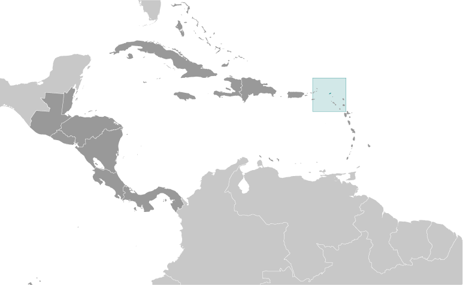
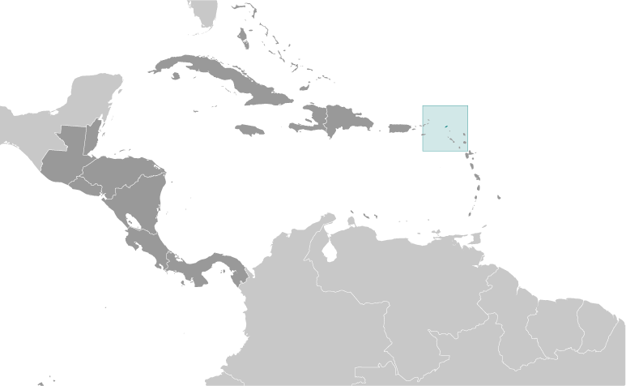

Central America ::
Anguilla
-
Introduction :: Anguilla
-
Background:Colonized by English settlers from Saint Kitts in 1650, Anguilla was administered by Great Britain until the early 19th century, when the island - against the wishes of the inhabitants - was incorporated into a single British dependency along with Saint Kitts and Nevis. Several attempts at separation failed. In 1971, two years after a revolt, Anguilla was finally allowed to secede; this arrangement was formally recognized in 1980, with Anguilla becoming a separate British dependency. On 7 September 2017, the island suffered extensive damage from Hurricane Irma, particularly to communications and residential and business infrastructure.
-
Geography :: Anguilla
-
Location:Caribbean, islands between the Caribbean Sea and North Atlantic Ocean, east of Puerto RicoGeographic coordinates:18 15 N, 63 10 WMap references:Central America and the CaribbeanArea:total: 91 sq kmland: 91 sq kmwater: 0 sq kmcountry comparison to the world: 227Area - comparative:about one-half the size of Washington, DCLand boundaries:0 kmCoastline:61 kmMaritime claims:territorial sea: 3 nmexclusive fishing zone: 200 nmClimate:tropical; moderated by northeast trade windsTerrain:flat and low-lying island of coral and limestoneElevation:0 m lowest point: Caribbean Sea73 highest point: Crocus HillNatural resources:salt, fish, lobsterLand use:agricultural land: 0% (2014 est.)arable land: 0% (2014 est.) / permanent crops: 0% (2014 est.) / permanent pasture: 0% (2014 est.)forest: 61.1% (2014 est.)other: 38.9% (2014 est.)Irrigated land:0 sq km (2012)Population distribution:most of the population is concentrated in The Valley in the center of the island; settlmement is fairly uniform in the southwest, but rather sparce in the northeastNatural hazards:frequent hurricanes and other tropical storms (July to October)Environment - current issues:supplies of potable water sometimes cannot meet increasing demand largely because of poor distribution systemGeography - note:the most northerly of the Leeward Islands in the Lesser Antilles
-
People and Society :: Anguilla
-
Population:17,422 (July 2018 est.)country comparison to the world: 220Nationality:noun: Anguillan(s)adjective: AnguillanEthnic groups:African/black 85.3%, hispanic 4.9%, mixed 3.8%, white 3.2%, East Indian/Indian 1%, other 1.6%, unspecified 0.3% (2011 est.)note: data represent population by ethnic originLanguages:English (official)Religions:Protestant 73.2% (includes Anglican 22.7%, Methodist 19.4%, Pentecostal 10.5%, Seventh Day Adventist 8.3%, Baptist 7.1%, Church of God 4.9%, Presbytarian 0.2%, Brethren 0.1%), Roman Catholic 6.8%, Jehovah's Witness 1.1%, other Christian 10.9%, other 3.2%, unspecified 0.3%, none 4.5% (2011 est.)Age structure:0-14 years: 22.01% (male 1,954 /female 1,880)15-24 years: 14.06% (male 1,231 /female 1,219)25-54 years: 43.27% (male 3,386 /female 4,152)55-64 years: 11.54% (male 918 /female 1,092)65 years and over: 9.13% (male 786 /female 804) (2018 est.)population pyramid:
 The World Factbook Field Image ModalCentral America :: Anguilla Print
The World Factbook Field Image ModalCentral America :: Anguilla Print Image DescriptionThis is the population pyramid for Anguilla. A population pyramid illustrates the age and sex structure of a country's population and may provide insights about political and social stability, as well as economic development. The population is distributed along the horizontal axis, with males shown on the left and females on the right. The male and female populations are broken down into 5-year age groups represented as horizontal bars along the vertical axis, with the youngest age groups at the bottom and the oldest at the top. The shape of the population pyramid gradually evolves over time based on fertility, mortality, and international migration trends.
Image DescriptionThis is the population pyramid for Anguilla. A population pyramid illustrates the age and sex structure of a country's population and may provide insights about political and social stability, as well as economic development. The population is distributed along the horizontal axis, with males shown on the left and females on the right. The male and female populations are broken down into 5-year age groups represented as horizontal bars along the vertical axis, with the youngest age groups at the bottom and the oldest at the top. The shape of the population pyramid gradually evolves over time based on fertility, mortality, and international migration trends.
For additional information, please see the entry for Population pyramid on the Definitions and Notes page under the References tab.Median age:total: 35.1 yearsmale: 33.2 yearsfemale: 37 years (2018 est.)country comparison to the world: 81Population growth rate:1.92% (2018 est.)country comparison to the world: 51Birth rate:12.4 births/1,000 population (2018 est.)country comparison to the world: 156Death rate:4.7 deaths/1,000 population (2018 est.)country comparison to the world: 202Net migration rate:11.7 migrant(s)/1,000 population (2017 est.)country comparison to the world: 7Population distribution:most of the population is concentrated in The Valley in the center of the island; settlmement is fairly uniform in the southwest, but rather sparce in the northeastUrbanization:urban population: 100% of total population (2018)rate of urbanization: 0.9% annual rate of change (2015-20 est.)Major urban areas - population:1,000 THE VALLEY (capital) (2018)Sex ratio:at birth: 1.04 male(s)/female (2017 est.)0-14 years: 1.04 male(s)/female (2017 est.)15-24 years: 1 male(s)/female (2017 est.)25-54 years: 0.82 male(s)/female (2017 est.)55-64 years: 0.9 male(s)/female (2017 est.)65 years and over: 0.98 male(s)/female (2017 est.)total population: 0.91 male(s)/female (2017 est.)Infant mortality rate:total: 3.3 deaths/1,000 live births (2018 est.)male: 3.7 deaths/1,000 live births (2018 est.)female: 2.9 deaths/1,000 live births (2018 est.)country comparison to the world: 206Life expectancy at birth:total population: 81.6 years (2018 est.)male: 79 years (2018 est.)female: 84.3 years (2018 est.)country comparison to the world: 25Total fertility rate:1.74 children born/woman (2018 est.)country comparison to the world: 162Drinking water source:improved: urban: 94.6% of populationtotal: 94.6% of populationunimproved: urban: 5.4% of populationtotal: 5.4% of population (2015 est.)Sanitation facility access:improved: urban: 97.9% of population (2015 est.)total: 97.9% of population (2015 est.)unimproved: urban: 2.1% of population (2015 est.)total: 2.1% of population (2015 est.)HIV/AIDS - adult prevalence rate:NAHIV/AIDS - people living with HIV/AIDS:NAHIV/AIDS - deaths:NAMajor infectious diseases:note: active local transmission of Zika virus by Aedes species mosquitoes has been identified in this country (as of August 2016); it poses an important risk (a large number of cases possible) among US citizens if bitten by an infective mosquito; other less common ways to get Zika are through sex, via blood transfusion, or during pregnancy, in which the pregnant woman passes Zika virus to her fetus
Education expenditures:2.8% of GDP (2008)country comparison to the world: 150 -
Government :: Anguilla
-
Country name:conventional long form: noneconventional short form: Anguillaetymology: the name Anguilla means "eel" in various Romance languages (Spanish, Italian, Portuguese, French) and likely derives from the island's lengthy shapeDependency status:overseas territory of the UKGovernment type:parliamentary democracy (House of Assembly); self-governing overseas territory of the UKCapital:name: The Valleygeographic coordinates: 18 13 N, 63 03 Wtime difference: UTC-4 (1 hour ahead of Washington, DC, during Standard Time)etymology: name derives from the capital's location between several hillsAdministrative divisions:none (overseas territory of the UK)Independence:none (overseas territory of the UK)National holiday:Anguilla Day, 30 May (1967)Constitution:history: several previous; latest 1 April 1982 (2018)amendments: amended 1990 (2018)Legal system:common law based on the English modelCitizenship:see United KingdomSuffrage:18 years of age; universalJudicial branch:highest courts: the Eastern Caribbean Supreme Court (ECSC) is the superior court of the Organization of Eastern Caribbean States; the ECSC - headquartered on St. Lucia - consists of the Court of Appeal - headed by the chief justice and 4 judges - and the High Court with 18 judges; the Court of Appeal is itinerant, travelling to member states on a schedule to hear appeals from the High Court and subordinate courts; High Court judges reside in the member states, though none on Anguillajudge selection and term of office: Eastern Caribbean Supreme Court chief justice appointed by Her Majesty, Queen ELIZABETH II; other justices and judges appointed by the Judicial and Legal Services Commission; Court of Appeal justices appointed for life with mandatory retirement at age 65; High Court judges appointed for life with mandatory retirement at age 62subordinate courts: Magistrate's Court; Juvenile CourtExecutive branch:chief of state: Queen ELIZABETH II (since 6 February 1952); represented by Governor Tim FOY (since August 2017)head of government: Chief Minister Victor BANKS (since 23 April 2015)cabinet: Executive Council appointed by the governor from among elected members of the House of Assemblyelections/appointments: the monarchy is hereditary; governor appointed by the monarch; following legislative elections, the leader of the majority party or majority coalition usually appointed chief minister by the governorLegislative branch:description: unicameral House of Assembly (11 seats; 7 members directly elected in single-seat constituencies by simple majority vote, 2 appointed by the governor, and 2 ex officio members - the attorney general and deputy governor; members serve five-year terms)elections: last held on 22 April 2015 (next to be held in 2020)election results: percent of vote by party - AUF 54.4%, AUM 38.3%, DOVE 1.4%, independent 5.9%; seats by party - AUF 6, independent 1; composition - men 8, women 3, percent of women 27.3%Political parties and leaders:Anguilla Democratic Party or ADP
Anguilla National Alliance or ANA
Anguilla United Front or AUF [Victor BANKS] (alliance includes ADP, ANA)
Anguilla United Movement or AUM [Dr. Ellis WEBSTER]
Democracy, Opportunity, Vision, and Empowerment Party or DOVE [Sutcliffe HODGE]International organization participation:Caricom (associate), CDB, Interpol (subbureau), OECS, UNESCO (associate), UPUDiplomatic representation in the US:none (overseas territory of the UK)Diplomatic representation from the US:none (overseas territory of the UK)Flag description:blue, with the flag of the UK in the upper hoist-side quadrant and the Anguillan coat of arms centered in the outer half of the flag; the coat of arms depicts three orange dolphins in an interlocking circular design on a white background with a turquoise-blue field below; the white in the background represents peace; the blue base symbolizes the surrounding sea, as well as faith, youth, and hope; the three dolphins stand for endurance, unity, and strengthNational symbol(s):dolphinNational anthem:name: God Bless Anguillalyrics/music: Alex RICHARDSONnote: local anthem adopted 1981; as a territory of the United Kingdom, "God Save the Queen" is official (see United Kingdom)
-
Economy :: Anguilla
-
Economy - overview:Anguilla has few natural resources, is unsuited for agriculture, and the economy depends heavily on luxury tourism, offshore banking, lobster fishing, and remittances from emigrants. Increased activity in the tourism industry has spurred the growth of the construction sector contributing to economic growth. Anguillan officials have put substantial effort into developing the offshore financial sector, which is small but growing. In the medium term, prospects for the economy will depend largely on the recovery of the tourism sector and, therefore, on revived income growth in the industrialized nations as well as on favorable weather conditions.GDP (purchasing power parity):$175.4 million (2009 est.)$191.7 million (2008 est.)$108.9 million (2004 est.)country comparison to the world: 222GDP (official exchange rate):$175.4 million (2009 est.) (2009 est.)GDP - real growth rate:-8.5% (2009 est.)country comparison to the world: 220GDP - per capita (PPP):$12,200 (2008 est.)country comparison to the world: 130GDP - composition, by end use:household consumption: 74.1% (2017 est.)government consumption: 18.3% (2017 est.)investment in fixed capital: 26.8% (2017 est.)investment in inventories: 0% (2017 est.)exports of goods and services: 48.2% (2017 est.)imports of goods and services: -67.4% (2017 est.)GDP - composition, by sector of origin:agriculture: 3% (2017 est.)industry: 10.5% (2017 est.)services: 86.4% (2017 est.)Agriculture - products:small quantities of tobacco, vegetables; cattle raisingIndustries:tourism, boat building, offshore financial servicesIndustrial production growth rate:4% (2017 est.)country comparison to the world: 75Labor force:6,049 (2001)country comparison to the world: 219Labor force - by occupation:agriculture: 74.1%industry: 3%services: 18%agriculture/fishing/forestry/mining: 4% (2000 est.)manufacturing: 3% (2000 est.)construction: 18% (2000 est.)transportation and utilities: 10% (2000 est.)commerce: 36% (2000 est.)Unemployment rate:8% (2002)country comparison to the world: 115Population below poverty line:23% (2002 est.)Budget:revenues: 81.92 million (2017 est.)expenditures: 80.32 million (2017 est.)Taxes and other revenues:46.7% (of GDP) (2017 est.)country comparison to the world: 19Budget surplus (+) or deficit (-):0.9% (of GDP) (2017 est.)country comparison to the world: 34Public debt:20.1% of GDP (2015 est.)20.8% of GDP (2014 est.)country comparison to the world: 189Fiscal year:1 April - 31 MarchInflation rate (consumer prices):1.3% (2017 est.)-0.6% (2016 est.)country comparison to the world: 67Central bank discount rate:6.5% (31 December 2010)6.5% (31 December 2009)country comparison to the world: 55Commercial bank prime lending rate:9.48% (31 December 2017 est.)9.01% (31 December 2016 est.)country comparison to the world: 90Stock of narrow money:$25.37 million (31 December 2017 est.)$23.74 million (31 December 2016 est.)country comparison to the world: 193Stock of broad money:$25.37 million (31 December 2017 est.)$23.74 million (31 December 2016 est.)country comparison to the world: 196Stock of domestic credit:$218.5 million (31 December 2017 est.)$209.1 million (31 December 2016 est.)country comparison to the world: 183Current account balance:-$23.2 million (2017 est.)-$25.3 million (2016 est.)country comparison to the world: 73Exports:$7.9 million (2017 est.)$3.9 million (2016 est.)country comparison to the world: 216Exports - commodities:lobster, fish, livestock, salt, concrete blocks, rumImports:$186.2 million (2017 est.)$170.1 million (2016 est.)country comparison to the world: 210Imports - commodities:fuels, foodstuffs, manufactures, chemicals, trucks, textilesReserves of foreign exchange and gold:$76.38 million (31 December 2017 est.)$48.14 million (31 December 2015 est.)country comparison to the world: 183Debt - external:$41.04 million (31 December 2013)$8.8 million (1998)country comparison to the world: 195Exchange rates:East Caribbean dollars (XCD) per US dollar -2.7 (2017 est.)2.7 (2016 est.)2.7 (2015 est.)2.7 (2014 est.)2.7 (2013 est.)
-
Communications :: Anguilla
-
Telephones - fixed lines:total subscriptions: 6,000 (July 2016 est.)subscriptions per 100 inhabitants: 37 (July 2016 est.)country comparison to the world: 203Telephones - mobile cellular:total subscriptions: 26,000 (July 2016 est.)subscriptions per 100 inhabitants: 158 (July 2016 est.)country comparison to the world: 207Telephone system:general assessment: modern internal telephone system with fiber-optic trunk lines; telecome sector provides a realatively high contribution to overall GDP; numberous competitors licensed, but small and localized (2017)domestic: fixed-line teledensity is about 37 per 100 persons; mobile-cellular teledensity is roughly 158 per 100 persons (2017)international: country code - 1-264; landing point for the East Caribbean Fiber System submarine cable with links to 13 other islands in the eastern Caribbean extending from the British Virgin Islands to Trinidad; microwave radio relay to island of Saint Martin/Sint MaartenBroadcast media:1 private TV station; multi-channel cable TV subscription services are available; about 10 radio stations, one of which is government-owned (2009)Internet country code:.aiInternet users:total: 13,665 (July 2016 est.)percent of population: 81.6% (July 2016 est.)country comparison to the world: 211
-
Transportation :: Anguilla
-
National air transport system:number of registered air carriers: 2 (2015)inventory of registered aircraft operated by air carriers: 3 (2015)Civil aircraft registration country code prefix:VP-A (2016)Airports:2 (2013)country comparison to the world: 197Airports - with paved runways:total: 1 (2017)1,524 to 2,437 m: 1 (2017)Airports - with unpaved runways:total: 1 (2013)under 914 m: 1 (2013)Roadways:total: 175 km (2004)paved: 82 km (2004)unpaved: 93 km (2004)country comparison to the world: 212Merchant marine:total: 1 (2017)by type: other 1 (2017)country comparison to the world: 171Ports and terminals:major seaport(s): Blowing Point, Road Bay
-
Military and Security :: Anguilla
-
Military - note:defense is the responsibility of the UK
-
Transnational Issues :: Anguilla
-
Disputes - international:noneIllicit drugs:transshipment point for South American narcotics destined for the US and Europe